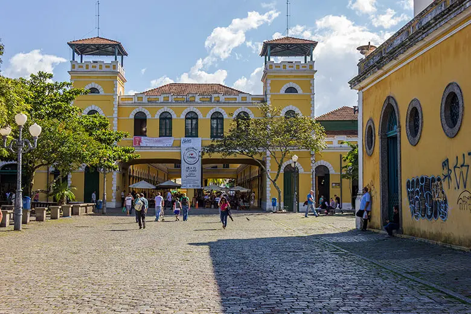
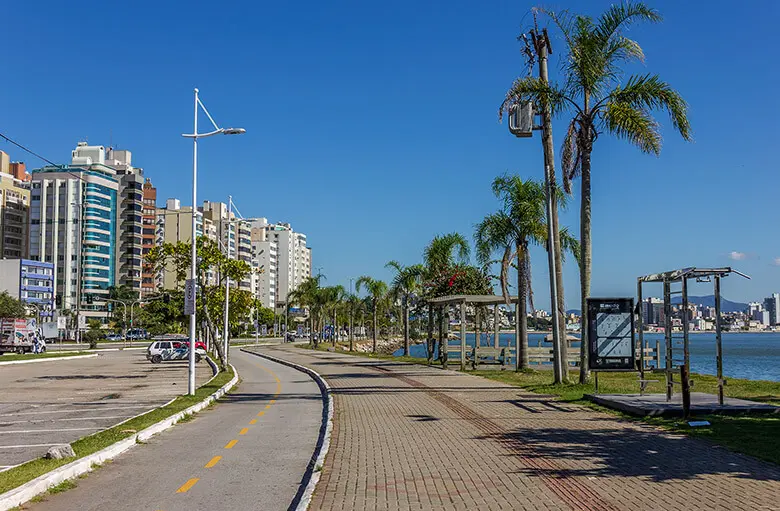

Florianópolis
Florianópolis é a capital do estado brasileiro de Santa Catarina, na Região Sul do país. O município é composto pela ilha principal, a ilha de Santa Catarina, a parte continental e algumas pequenas ilhas circundantes. A cidade tem uma população de 574 200 habitantes. A economia de Florianópolis é fortemente baseada na tecnologia da informação, no turismo e nos serviços.[10] A cidade tem mais de 100 praias registradas e é um centro de atividade de navegação. Os barcos de pesca, as rendeiras, o folclore, a culinária e a arquitetura colonial contribuem para o crescimento do turismo e atraem recursos que compensam a falta de um grande parque industrial

1- Mercado Público de Florianópolis
Não importa qual o destino, se ele tiver um mercado público é muito provável que o lugar se transforme em um ponto turístico. E, obviamente, não é diferente com o de Floripa.
Localizado no centro, pertinho do terminal de ônibus e da rodoviária, o Mercado Público de Florianópolis chama atenção pela sua abundância de bares e restaurantes.
Outros produtos também são comercializados, porém, quem vai normalmente está interessado em provar algumas das delícias locais.
A maioria dos restaurantes oferecem menus para duas pessoas, a preços não tão amigáveis.
Em alguns deles é possível encontrar pratos executivos mais básicos que custam em torno de R$ 27,00. Porém, se acaso você quiser apenas beliscar algo bem baratinho, a Lanchonete do Elias vende um caldo de cana + um bolinho ou pastel, por R$ 8,00.
2- Mirante Morro da Cruz
Quem gosta de ver as cidades do alto certamente ficará contente em visitar o Mirante Morro da Cruz. Isso porque, a apenas sete quilômetros do centro, é deste local que você terá uma das mais belas vistas de Floripa.
Se possível, programe para visitá-lo em um fim de tarde porque é quando o cenário fica ainda mais apaixonante.
Para chegar até lá uma corrida de Uber a partir do centro deve custar cerca de R$ 18,00. Porém, se você também não se importa de andar de ônibus, a boa notícia é que há uma linha que te deixa exatamente no acesso do mirante.
A linha 160 sai do terminal do centro (TICEN) e faz o percurso em cerca 40 minutos. Apenas consulte o horário antes de ir pois as saídas não são tão frequentes (se não me engano a cada quarenta minutos).
Importante lembrar que o acesso é gratuito, e que você não encontrará nenhuma estrutura turística por lá.

3- Caminhada pela Beira Mar Norte
Estava a caminho do centro dentro de um ônibus quando saltei antes do terminal para finalizar o percurso a pé.
Ainda que com tráfego intenso, a Beira Mar Norte e sua orla bem cuidada é um local bastante agradável para uma caminhada. Não há nada de muito especial, mas o calçadão atrai os esportistas de plantão e a região rende algumas fotos bacanas.
É por estes lados que está o Beiramar Shopping e muitos hotéis de rede.